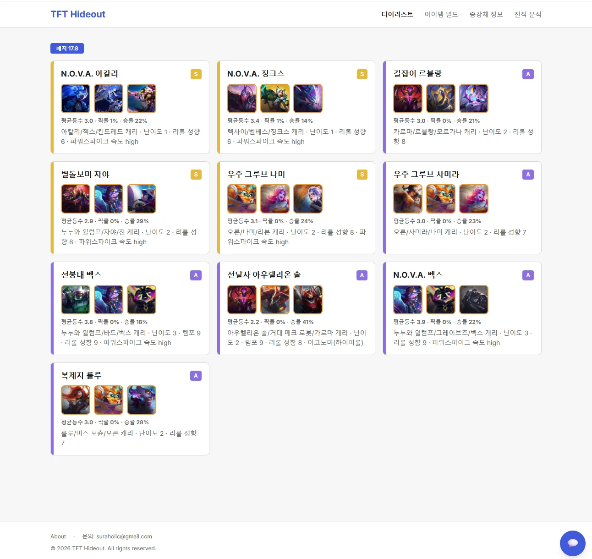
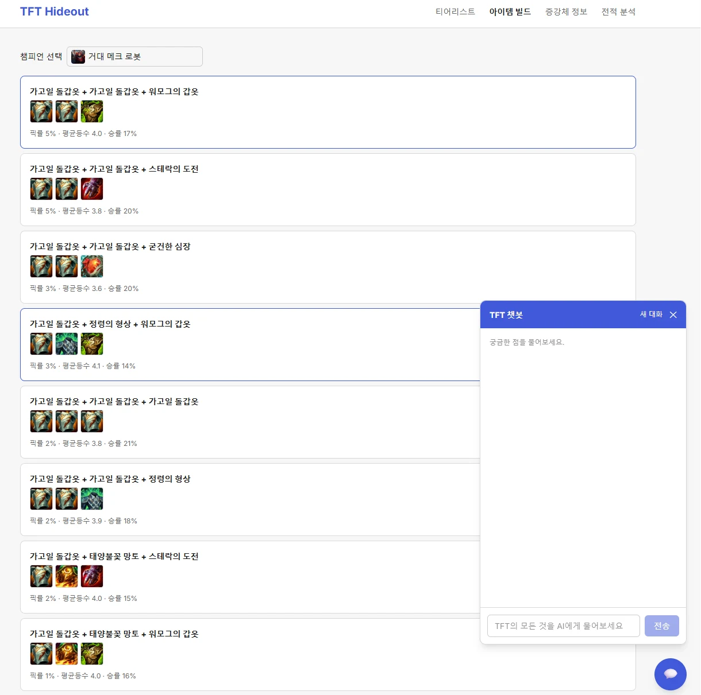
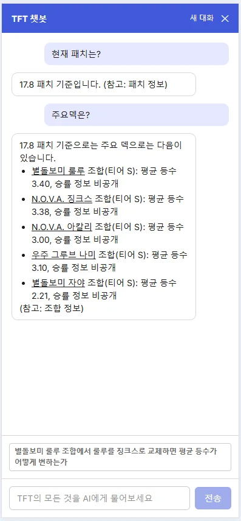
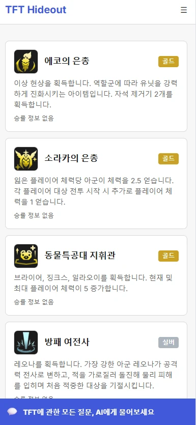

AI 개인 프로젝트
TFT 메타 정보 sLLM + RAG 서비스
TFT Hideout — “메타를 찾아보지 말고, 물어보게 하자” · 카탈로그(웹) + 챗봇(RAG) + 사후 패인 분석
무료 티어 sLLM은 파인튜닝도, 프롬프트 튜닝도 한계가 명확했습니다.
하지만 AI 챗봇을 직접 만들어보면서, 결국 품질을 좌우하는 것은 모델 자체보다 모델에게 어떤 정보를 보여주고, 어떤 범위까지 답변하도록 할 것인지를
얼마나 꼼꼼하게 설계하느냐라는 것을 배웠습니다. 특히 데이터 구조를 잘못 설계하면 할루시네이션으로 이어질 수 있다는 점과, 검색 결과의 품질을
사전에 검증하는 방법까지 설계 단계에서 충분히 고민할 필요가 있다는 것을 느꼈습니다. AI 제품은 일반적인 서비스처럼 화면이 깨지거나 기능이
동작하지 않는 방식으로 문제가 드러나는 것이 아니라, 자연스럽지만 잘못된 답변을 만들어내며 실패할 수 있다는 걸 크게 체감할 수 있었습니다.
RAG와 임베딩의 품질을 어떻게 평가하고 검증할 수 있는지, AI 제품의 실패 가능성을 개발 전에 어떻게 체계적으로 설계할 수 있는지 더 깊이 공부해보려고 합니다.
개요
TFT(전략적 팀 전투) 메타는 패치마다 바뀌고, 정작 “지금 뭘 써야 이기는지”는 여러 커뮤니티·영상을 뒤져야 알 수 있습니다. TFT Hideout은 티어리스트·조합·아이템·증강체 데이터를 하나의 정규화된 데이터 계층으로 모으고, 이를 탐색형(웹사이트)과 질의응답형(챗봇 RAG) 두 채널로 동시에 제공하는 개인·비상업 목적 MVP입니다. 본인 + 지인 약 10명 규모로 범위를 한정해, “만들 수 있는 최소 기능”이 아니라 “직접 매일 써도 되는 완성도”를 목표로 설계했습니다.
증강체정보 4화면
전 페이지 전역 위젯
PM(기획자) 1인이 Claude Code와의 페어프로그래밍으로 요구사항 정의부터 아키텍처·DB 스키마 설계, RAG 파이프라인, 화면 구현, 테스트, 배포까지 전 과정을 주도했습니다. 모든 인프라는 무료 티어(Render·Cloudflare Pages·Supabase·Groq·Hugging Face)로 구성해, 비상업 개인 프로젝트 규모에 맞는 비용 구조를 처음부터 설계에 반영했습니다.
기획 (PRD·IA)
기획 문서는 PRD → 개발설계서 → IA/화면설계서/디자인가이드 → WBS/진행현황 순으로 우선순위를 명시해 관리했습니다. AI와 여러 세션에 걸쳐 협업하다 보니 매 세션 수십 페이지 원본 문서를 다시 읽는 비용이 컸는데, 이를 줄이기 위해 문서를 원본 확정본(source)·경량 요약본(reference)·구버전 보관(archive) 3단으로 분리하고, TASK 그룹별로 “우선 참조 파일”을 CLAUDE.md에 표로 고정했습니다.
-
TFT_sLLM_PRD_v1.3_최종
제품 요구사항, 사용자 플로우, Legend 승률 비노출 등 정책 근거(10·12장).
-
TFT_sLLM_개발설계서_v1.7
아키텍처·DB 스키마(ERD)·API 명세·RAG 파이프라인 설계(4.4장).
-
진행현황
109 TASK(취소 3 포함, 활성 106) 단위 분해, TASK별 테스트 요구사항 컬럼 포함.
※ 위 설계 문서들은 사후에 정리한 산출물이 아니라, Claude Code와 세션마다 대화하며 실제로 갱신해 온 원문입니다
— PRD는 v1.3, 개발설계서는 Redis 제거 등 인프라 변경을 반영해 v1.7까지 개정되었습니다.
정보구조(IA) — 사이트맵
├─ /tierlist — 홈·티어리스트, 조합 카드/표 + 필터(패치·랭크)
│ └─ /comps/{comp_id} — 조합 상세: 챔피언 구성·추천 증강체·아이템 빌드 연결
├─ /items/builds — 아이템 빌드, 챔피언별 조합·픽률·평균등수·승률
├─ /augments — 증강체 정보, Legend 계열은 승률 비노출(정책)
├─ /analysis — 사후 패인 분석, Riot ID 연동(비로그인, localStorage)
│ └─ /analysis/{match_id}/report — 코칭 리포트: 잘한점·아쉬운점·다음게임 제안
├─ /kpi — KPI 대시보드, 비밀번호 게이트, GNB 미노출(PM 전용)
└─ [전역 레이어] 챗봇 위젯 — 모든 페이지에 중첩, 별도 URL 없음
※ 챗봇은 별도 URL 계층 없이 전 페이지에 수평 중첩되는 전역 컴포넌트로 설계했고(IA 2장), “방금 게임 분석해줘” 같은 대화로 /analysis와 동일한 분석 로직을 트리거할 수 있습니다.
디자인
서비스 자체 BI로 TFT Hideout 컬러 시스템을 별도 정의했습니다. 원칙은 “데이터 우선(Data-first)” — 장식보다 표·카드·수치의 가독성을 우선하고, 웹사이트와 챗봇 두 채널이 같은 색상·타이포·버튼 스타일을 공유해 하나의 서비스로 인지되게 했습니다. Figma MCP 연동은 2026-08-04 PM 결정으로 취소하고, 이후 프론트엔드 작업은 디자인가이드(design-tokens) + 화면설계서 2개 문서만으로 진행했습니다.
- Data-first
- 근거 명시
- 웹·챗봇 시각 일관성
- 반응형 값 유지
티어 배지 색상은 화면설계서에 “디자인 재량”으로 명시되어 미확정이었던 항목이라, 게임 내 등급 표기 관행을 근거로 S(골드)·A(퍼플 #8C6FE0)·B(블루 #4C9BE0)·C(그레이) 권장안을 디자인가이드에 직접 문서화했습니다. Legend 계열 증강체는 승률 수치 대신 “승률 표시 안함” 문구를 Tertiary 컬러(#8C8C8C)로 표기해, 데이터 부재와 정책상 비노출을 구분되게 표현했습니다.
개발
- 무료 인프라 재설계 2건 — 애초 계획했던 Upstash Redis 캐시를 제거하고 PostgreSQL 테이블(chat_answer_cache, puuid_cache)로 통합, Metabase는 Render 무료 플랜(512MB)에서 OOM으로 배포가 불가해 KPI 대시보드를 자체 페이지(/kpi, 비밀번호 게이트)로 직접 구현. 둘 다 “계획대로 안 되면 바로 대안 설계 → 문서 반영”으로 처리한 사례.
- RAG 파이프라인 — 입력을 4종 의도(조합/아이템/증강체 추천, 일반 전략 질문)로 분류 후 하이브리드 검색 → 프롬프트 조립 → sLLM(Groq Llama 3.3 70B) 스트리밍 응답. 정책이 걸린 로직(Legend 승률 비노출, 상대 닉네임 마스킹)은 전처리(컨텍스트 제외) + 후처리(정규식 재검사) 이중 방어로 구현.
- 실시간 웹 검색 보강 경로 — 조합/아이템/증강체 추천 등 4개 의도는 이미 적재된 내부 DB만 조회한다는 원칙(외부 API를 질문마다 직접 호출하지 않음)을 따르지만, 내부 RAG로 답할 수 없는 질문은 Tavily 웹 검색 API를 질문마다 실시간 호출해 상위 3건 스니펫을 근거로 답변합니다. 원칙에서 벗어나는 범위를 카테고리 하나로 한정했고, 근거 표기 방식도 다른 4개 의도(patch_version 명시)와 달리 출처 URL을 표기하도록 시스템 프롬프트를 별도로 분리했습니다. 오프토픽(TFT 무관) 판별도 1차 키워드 → 2차 LLM 재확인 방식으로 함께 보강해, 키워드만으로 애매한 TFT 관련 질문(예: 시즌 일정)이 조기 차단되지 않도록 했습니다.
- 데이터 파이프라인 선행 조사 — 공식 TFT DDragon 신규 구조가 아직 없다는 것을 스파이크로 먼저 확인하고 Community Dragon으로 대체, op.gg MCP 응답 스키마도 실호출로 먼저 검증한 뒤 배치 워커를 구현. 패치 전환은 patches.is_current 플래그를 배치 전체 성공 시점에만 트랜잭션으로 원자적 전환해 정합성을 보장.
- 세션 간 컨텍스트 관리 — TASK 1개 = 세션 1개 단위로 쪼개고, 구현 → 테스트 작성/통과 → 자체검증 → PM 확인요청 → 작업결과 기록 → 진행현황 갱신 → 커밋/푸시 순서를 고정. PM 승인 전에는 완료 처리도 커밋도 하지 않는 게이트를 문서로 강제.
- CI/CD — GitHub Actions로 backend pytest·frontend Vitest 자동 실행, 실패 시 브랜치 보호로 머지 차단. 테스트 fixture는 실제 Riot ID/PUUID를 쓰지 않고 스키마만 실제·값은 합성으로 구성.
스크린샷




결과
카탈로그 3개 화면(티어리스트·조합상세·아이템빌드·증강체정보)과 챗봇 RAG 파이프라인, CI 게이트, KPI 백엔드는 완료해 배포까지 마쳤고, 현재는 사후 패인 분석(Riot Personal Key 재발급 대기 중)과 통합/E2E 테스트, 스테이징 배포 단계를 진행 중입니다(전체 진행률 64%, 2026.08.12 기준). 대그룹 9개(시스템설정·데이터파이프라인·백엔드API·챗봇RAG·사후패인분석·프론트엔드·KPI모니터링·테스트·배포릴리즈) 중 시스템설정·백엔드API·챗봇RAG는 거의 완료 단계이며, 실사용(PM 본인) 중 발견한 이슈—증강체 설명 플레이스홀더, 조합 헥스 배치 좌표, 아이템 효과 RAG 미연동, 검색 신뢰도 임계값 부재 등—를 TASK로 즉시 분리해 반영하는 방식으로 계획을 계속 갱신해 왔습니다.
1인 기획자로서 AI와의 페어프로그래밍만으로 요구사항 정의 → 설계 → 구현 → 테스트 → PM 검증까지 전 과정을 운영하며 얻은 교훈은, “계획대로 안 될 항목을 미리 다 예측하기보다, 계획이 틀렸을 때 바로 문서에 반영하고 다음 세션이 그걸 다시 조사하지 않게 만드는 절차”가 더 중요하다는 점이었습니다. Redis 제거, Metabase 대체, Figma 연동 취소 모두 진행 중 발견한 제약에 대한 PM 결정이었고, 셋 다 CLAUDE.md·design-tokens.md 갱신으로 다음 세션에 곧바로 반영되었습니다. 남은 작업은 사후 패인 분석 API/스코어링 로직, 통합·회귀 테스트, 스테이징·프로덕션 배포이며, 완료 후에는 저장소를 포트폴리오 공개용으로 전환할 계획입니다.